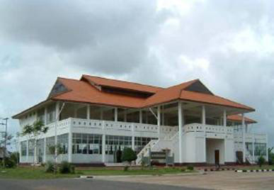

เมนู |
ศูนย์ศิลปาชีพบ้านเนินธัมมัง โครงการ ศูนย์ศิลปาชีพบ้านเนินธัมมัง เป็นโครงการพระราชดำริในสมเด็จพระบรมราชินีนาถ โดยก่อตั้งเมื่อ พ.ศ.2537 ณ หมู่ที่ ๕ ต.แม่เจ้าอยู่หัว อ.เชียงใหญ่ จ.นครศรีธรรมราช เริ่มแรกมีสมาชิก 11 คน ทอผ้าตามพระราชเสาวนีย์ฯ ส่งกองศิลปาชีพสวนจิตรลดา ปัจจุบันมีสมาชิก 129 คน มีสำนักงานพัฒนาชุมชนเข้าไปเป็นหน่วยงานเสริมสนับสนุน กี่ทอผ้า จำนวน 20 ชุด และโรงเรือน 1 หลัง และช่วยเหลือในด้านการตลาด เปิดสอนการทอผ้าฝ้าย การปักผ้าด้วยมือ การถักโครเชต์ และการจักสานกระจูด ซึ่งอยู่ในการควบคุมดูแลของชุดประสานงานศูนย์ศิลปาชีพ กองทัพภาคที่ 4 
|
| หน้าแรก | |
| วัดพระมหาธาตุ วรมหาวิหาร | |
| วัดเขาขุนพนมและศูนย์วิทยาศาสตร์เพื่อ การศึกษาเขาขุนพนม | |
| ศูนย์ศิลปาชีพบ้านเนินธัมมัง | |
| ศาล หลวงต้นไทร | |
| สวนสมเด็จพระศรีนครินทร์ 84 (ทุ่งท่าลาด) | |
| แหลมตะลุมพุก | |
| วัดแม่เจ้าอยู่หัว (พระนางเลือดขาว) | |
| เขื่อนบ้านพ่อ ปากพนัง | |
| น้ำตกกรุงชิง | |
| ล่องแก่งคลองกลาย | |
| อ่างเก็บน้ำจุฬาภรณ์ | |
| วัดอาตาปีคีรีเขต (วัดถํ้าเพด้าน) | |